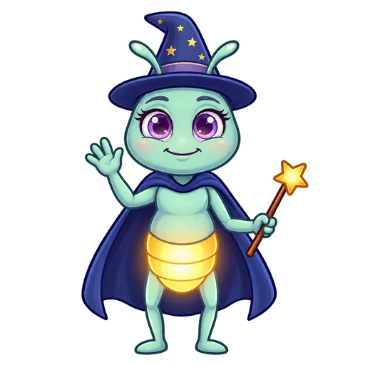
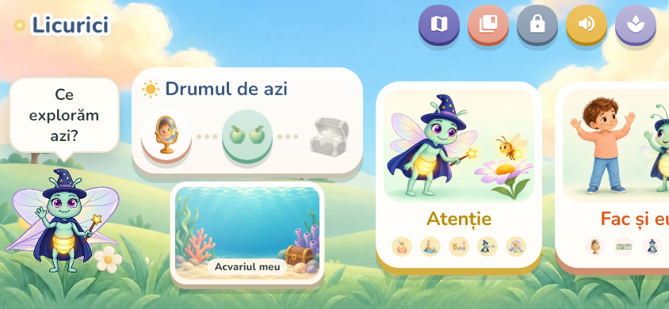
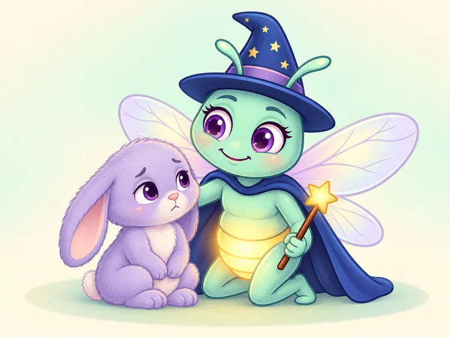
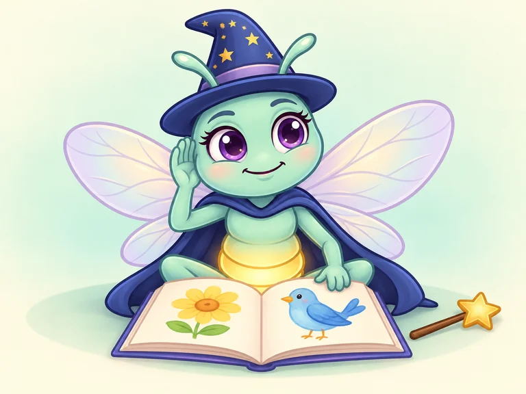
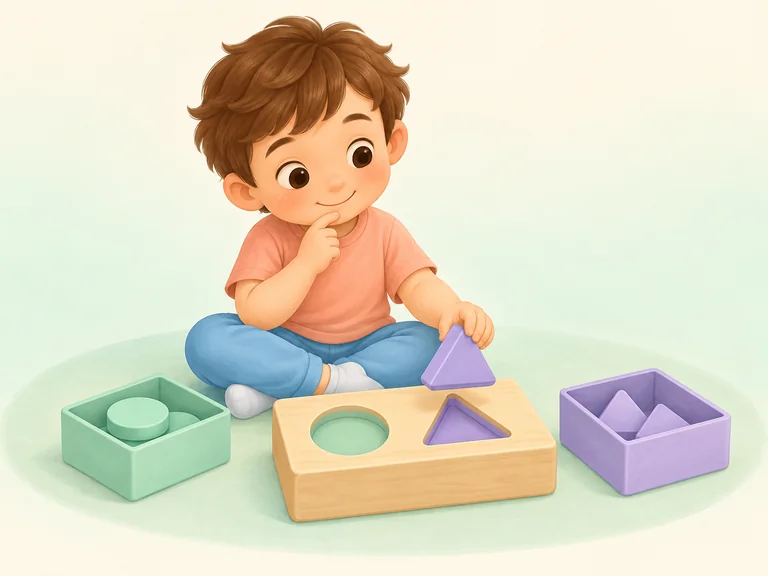
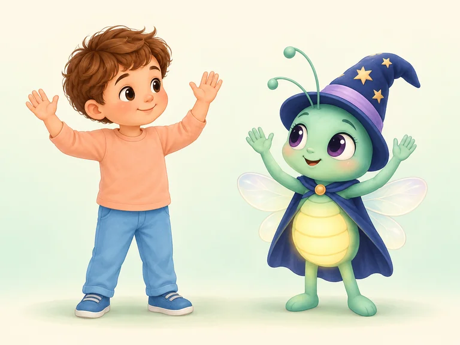
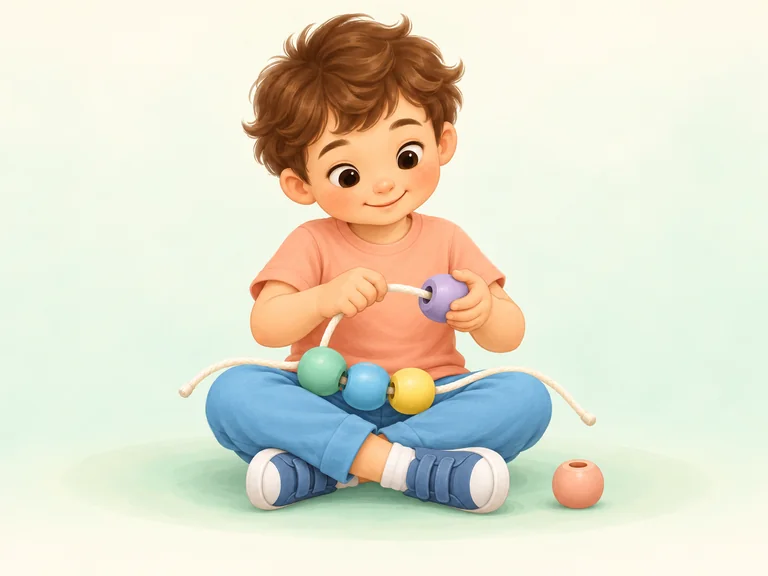
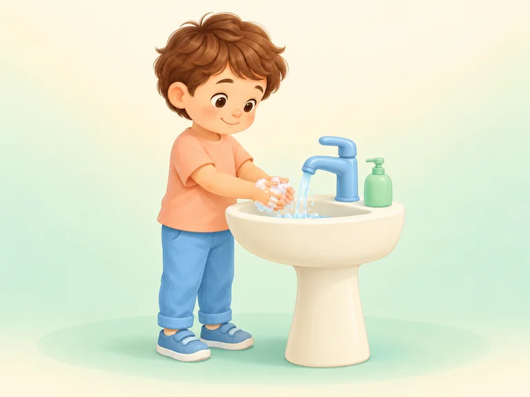
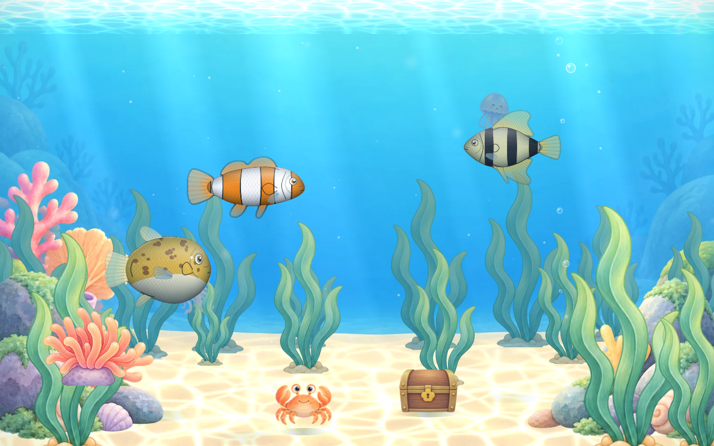

Încurajare, la fiecare pas
Indicii blânde și bucuria de a încerca din nou. Efortul contează, fără pedepse sau comparații între copii.

Licurici. Aruncă o privireO LUME MICĂ, PLINĂ DE POSIBILITĂȚI
Învățarea începe cu joaca. Licurici îi însoțește pe copii într-o lume blândă de culori, emoții și descoperiri. În limba română. În ritmul lor.

O PRIVIRE ÎN LUMEA LICURICI
De la prima alegere la „am reușit!”.
Explorează câteva ecrane reale din aplicație.
„Drumul de azi” aduce activitățile la un loc. Copilul descoperă lumea jocurilor, pas cu pas, cu Licurici alături.
Captură reală · Telefon în landscapeFIECARE COPIL ARE CEVA DE DESCOPERIT
Activitățile sunt organizate pe abilități. Alege o lume și vezi un exemplu din aplicație.

Emoții și relațiiRecunoaștem expresii și vorbim despre ce simțim.

Limbaj și înțelegereAscultăm, alegem și legăm cuvintele de imagini.

Gândire și potrivireComparăm, sortăm și descoperim cum se leagă lucrurile.

Imitație și atențiePrivim un model și încercăm, pas cu pas, să îl repetăm.

Mișcare și precizieAtingem, trasăm și colorăm cu gesturi tot mai sigure.

Rutine și autonomieUn program vizual face următorul pas mai ușor de înțeles.
CUM ARATĂ O MICĂ AVENTURĂ
Un fir simplu și previzibil, care lasă loc pentru învățare.
O instrucțiune în română și imagini clare arată ce este de făcut. O singură sarcină, fără grabă.
Copilul alege, atinge sau trage un obiect. Când are nevoie, primește un indiciu blând și o nouă ocazie.
La final îl așteaptă stele și un abțibild pentru album. Adultul poate urmări ce a exersat.
CU GRIJĂ PENTRU FIECARE COPIL
O experiență gândită pentru copii de 3–10 ani,
cu atenție la nevoi și sensibilități diferite.
Indicii blânde și bucuria de a încerca din nou. Efortul contează, fără pedepse sau comparații între copii.
Modul calm reduce mișcarea și efectele vizuale. O singură sarcină pe ecran, cu ținte mari și clare.
Activitățile sunt disponibile offline, fără cont pentru copil. Sincronizarea cu panoul adultului este opțională.

Acvariul meu · Captură din aplicațieUN STROP DE MAGIE, DOAR AL LOR
Un peștișor colorat de copil. Un colț de recif. Un cufăr de descoperit. Acvariul transformă micile reușite într-un spațiu personal de explorare.
Copilul poate colora pești, îi poate hrăni și îi poate privi înotând. Iar modul calm păstrează experiența liniștită.
COPILUL EXPLOREAZĂ. ADULTUL ÎL ÎNSOȚEȘTE.
Licurici leagă joaca de o perspectivă mai clară asupra progresului, prin zone dedicate adulților.
Rezumate ale sesiunilor, istoricul activităților și setări potrivite copilului. Părintele alege dacă trimite datele și dacă invită un specialist.
Observă. Înțelege. Încurajează.Planuri de activități, progres pe abilități și notițe, pentru copiii partajați cu acordul părintelui. Un punct de plecare pentru discuții mai concrete.
Planifică. Urmărește. Adaptează.DINTR-O IDEE, UN PROIECT DE CERCETARE
Licurici este un proiect realizat în cadrul unei teze de licență. Explorează cum pot jocurile educative, dificultatea adaptivă și o interfață atent construită să susțină învățarea în limba română.
Proiect în dezvoltare
Această pagină este o prezentare generală. Ecranele ilustrează versiunea de lucru, iar funcționalitățile pot evolua. Evaluarea cu utilizatori este un pas următor al proiectului.
Titlu de lucru al temei
*Nume preluat din documentația universitară a proiectului; coordonarea tezei urmează a fi confirmată.
Proiectul explorează ajustarea dificultății pe abilități, pe baza încercărilor din jocuri.
Interacțiuni previzibile, voce română, ținte mari și posibilitatea de a reduce stimularea.
Sesiuni păstrate pe dispozitiv și sincronizare opțională pentru urmărirea progresului.
BINE DE ȘTIUT
Există versiuni Android de test în pagina de versiuni a proiectului. Aplicația este în dezvoltare; nu este încă o lansare finală în magazinele de aplicații.
Aplicația copilului este gândită pentru telefoane și tablete, cu ecranul în poziție orizontală. Sunt disponibile versiuni Android de test. Versiunea iOS nu a fost încă validată. Panoul adulților se accesează în browser.
Pentru jocurile de pe dispozitiv, nu. Contul adultului și conexiunea sunt necesare doar pentru funcțiile online, precum sincronizarea și accesul la panou.
Licurici este un proiect educativ. Nu oferă diagnostice și nu înlocuiește evaluarea, recomandările sau intervenția unui specialist. Adaptările de interfață urmăresc o experiență mai accesibilă; eficiența lor urmează să fie evaluată.